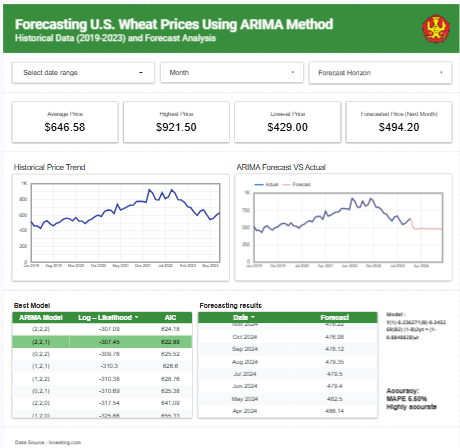

Data Analysis
Turning structured data into practical insight for reporting and decision support.
Statistics Graduate and Data Professional
I turn field observations and raw data into clear, dependable insight through survey execution, statistical analysis, and structured reporting.
Profile
A concise view of my background, strengths, and the way I approach data-driven work.

I have supported statistical work through field interviews, public opinion surveys, and administrative data processing. My background includes big data fundamentals, time series analysis, regression, clustering, machine learning, and analytics.
Beyond technical ability, I bring structure, accountability, and communication discipline from organizational leadership and collaboration in professional environments.
Turning structured data into practical insight for reporting and decision support.
Conducting interviews, validating respondents, and maintaining clean documentation.
Preparing verified data assets for statistical publications and institutional use.
Coordinating responsibilities with clarity, ownership, and dependable follow-through.
Experience
Selected roles that highlight survey execution, validation work, and statistical operations support.
10 June 2024 - 17 June 2024
North Tatura, Palu City
07 May 2023 - 14 May 2023
Kamonji, West Palu District
July 2023 - August 2023
Central Sulawesi Province
Projects
Highlighted analytical work presented through real visual outputs and compact project summaries.
 K-Means Analysis
K-Means Analysis
Cluster-based analysis to identify tourism sectors with high potential for workforce absorption and strategic development.

Behavior AnalyticsAnalytical study exploring how physical activity patterns relate to sleep quality through measurable behavioral indicators.
 Time Series
Time Series
Forecasting-oriented analysis using ARIMA to model temporal patterns and support more structured trend interpretation.
Recognition
Certifications and development programs that reflect institutional trust, continuous learning, and practical readiness.

Recognition for supporting public statistical literacy and institutional outreach activities.

Leadership development experience that strengthened communication, ownership, and team coordination.

Foundational learning certificate focused on essential deep learning concepts and practical model understanding.

Intermediate-level certificate representing continued development in applied deep learning and model improvement.

Development program certificate highlighting continued upskilling and commitment to applied learning growth.

Preparatory program certificate reflecting collaborative problem-solving readiness and competition-oriented learning.
Contact
Available for collaboration, professional opportunities, and conversations around statistics and data work.
Palu, Indonesia
+62 821-9190-1904
korisonmangais04@gmail.com
linkedin.com/in/korisonmangais
Open to Opportunities
If you are looking for someone who can combine structured field execution with careful data handling and clear reporting, I would be glad to connect.